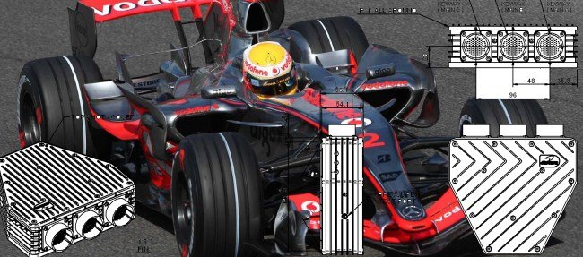

|  |

En esta nueva serie que inicio con este artículo, quiero señalar esos desarrollos que son el sueño de todo programador y que está muy alejado del trabajo que la generalidad de nosotros realizamos diariamente.
Hoy quiero echarle un vistazo al “top” de la alta competición del automovilismo: la formula uno. Certamen que se ha situado, sin duda, entre los deportes más seguidos en el mundo y que es controlado férreamente por la Federación Internacional de Automovilismo (FIA).
En el año de 2006 se lanzó un concurso para el contrato del desarrollo de un ECU único para todos los motores de la parrilla, con el objetivo de tenerlos funcionando en la temporada del 2008.
El concurso lo gano McLaren Electronics y Microsoft.
McLaren Electronics lleva desde 1989 investigando, construyendo y desarrollando los controles electrónicos de los vehículos de competición del grupo McLaren en formula uno.
Al consolidarse un crecimiento constante de la electrónica en las competiciones de los deportes a motor, McLaren se encontró en una posición única para ofrecer sus productos más allá de la competición en la cual participaban sus monoplazas.
Lo que lo ha llevado a continuar siendo el Proveedor Oficial de la Unidad de Control Electrónico (ECU) para el Campeonato del Mundo FIA de Fórmula Uno, el único proveedor de ecus de la IndyCar y, en 2012 y el Proveedor Oficial de este tipo de dispositivo en la NASCAR.
Estos cajas negras son capaces de controlar el motor, la caja de cambios y el chasis de un coche de carreras moderno. Así como proporcionar la telemetría en tiempo real y el análisis de datos de todos los equipos de de Fórmula Uno, lo cual implica un enorme flujo y volumen de información.
La solución no solamente comprende el ECU y su control del monoplaza, si no también de un servidor de datos central en el garaje, que recibe los datos del vehículo, los registra para el análisis de forma casi instantánea y los redistribuye a las herramientas cliente del equipo.
Dichos componentes del box (servidor de datos y herramientas de cliente) son conocidos como ATLAS (telemetría avanzada Vinculado a Sistemas de Análisis), y han sido desarrollado por McLaren.
La ECU recoge los datos de más de 100 sensores ubicados en cada coche, generando entre 100 Kb y 0,5 Mb de datos por segundo, lo que significa que se captura más de 1 Gb de información desde los sensores del vehículo durante una carrera de Gran Premio.
De hecho se supera de largo los 2Tb de información a lo largo de un año de competición por monoplaza, que deben ser almacenados para ser accesibles de forma inmediata, tanto a los datos en tiempo real como al histórico, durante los días de competición o en cualquier otro momento. Y que aporta mucho valor al tomar decisiones sobre cosas tan críticas como el camino a tomar para la puesta a punto del vehículo.
La ECU genera datos sobre 1.000 parámetros que son de interés inmediato para el equipo de ingenieros en boxes, y hay otros 10.000 puntos de datos que se examinan con menos frecuencia para orientar el diagnóstico.Paul Spence
Director de Productos, McLaren Electronic Systems
Dentro del extenso estudio que se hace sobre la solución original, hace más de cuatro años, de lo que más me ha llamado la atención es el uso de las posibilidades que ofrecen las capacidades de FILESTREAM que permite SQL 2008 para trabajar los bloques de información en formato BLOB con la velocidad de escritura y lectura que requiere este sistema crítico.
Además, ya entonces, McLaren estaba interesado en el uso de los Analisys Services para construir cubos de datos multidimensionales para buscar nuevas y más profundas maneras de explotar la información.
El resultado, visto la renovación para la temporada finalizada del 2011 y la próxima del 2012, y la ampliación del ámbito de instalación del sistema, ha sido excelente.
¿Y quien no quisiera tener como oficina el box de Ferrari o de Hispania, en algún lugar del mundo distinto cada dos semanas?.
Más información | McLaren Electronics, Microsoft Case Studies
| |